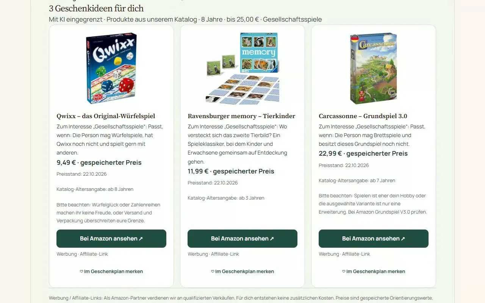
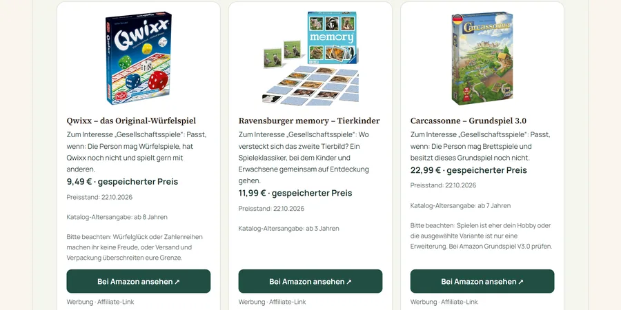
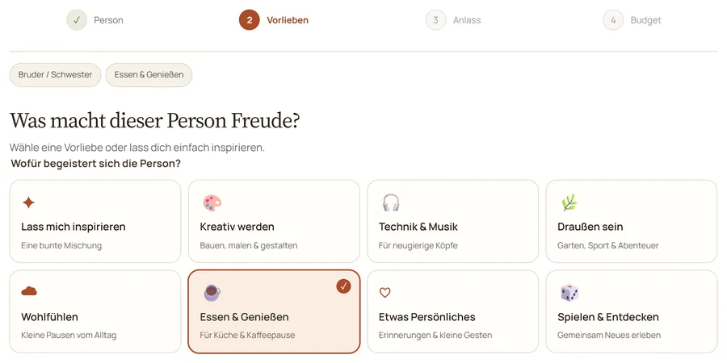
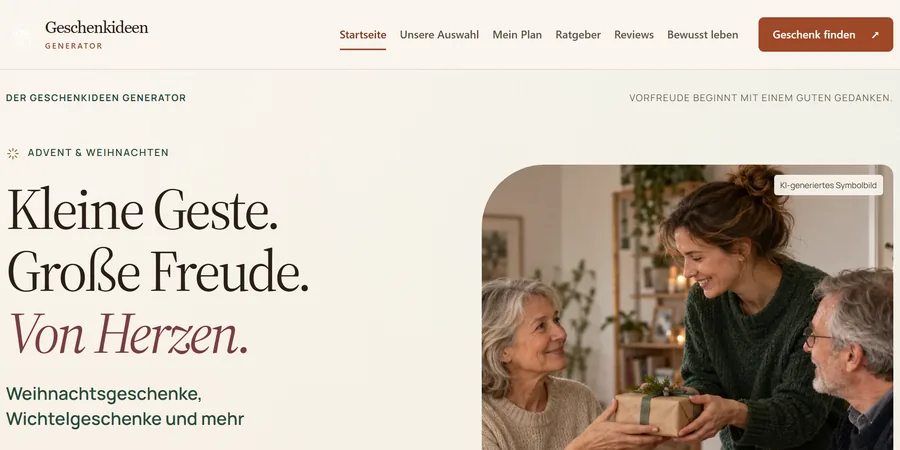

Projekt 1 von 8 · Aleks Paramonov
Geschenkideengenerator
Geschenkideen-Website mit KI-Suche
live geschenkideengenerator.com öffnen
- Status
-
- Seit dem 04.11.2026 ist die KI-Suche freigeschaltet.
- Am selben Tag wurde der Katalog zuletzt ergänzt.
- Zeitraum
- seit 06/2025
- Mein Anteil
- Allein entwickelt, mit Coding-Agenten als Werkzeug: Website, Produktkatalog mit Datenpflege, Geschenkfinder ohne KI und die KI-Suche.
geschenkideen

Was es tut
Man beschreibt die Person in ein bis zwei Sätzen, zum Beispiel Alter, Hobbys, Anlass und Budget. Eine KI macht daraus ein festes Suchprofil, und ein Programm wählt bis zu drei Vorschläge aus dem Katalog der Seite. Wer keine KI nutzen möchte, nimmt den Geschenkfinder ohne KI und klickt sich in vier Schritten zum Ergebnis.
Was ich gelöst habe
Die KI füllt nur ein festes Suchprofil aus
Aus dem Wunsch liest das Sprachmodell nur feste Angaben heraus, etwa Alter, Budget, Anlass, Empfänger, Interessen und Ausschlüsse. Ist der Wunsch unklar, stellt es eine kurze Rückfrage. Die Produkte wählt danach ein Programm aus dem Katalog. So kann die KI keine Produkte erfinden.
Sprachmodell Die Art von KI, die Texte liest und schreibt.

Vier feste Grenzen für die KI-Kosten
Jeder Besucher und die ganze Seite haben feste Grenzen für die KI-Aufrufe. Ist eine Grenze erreicht, bleibt die Suche ohne KI nutzbar.
| 5 | KI-Suchen je Besucher in 10 Minuten |
|---|---|
| 20 | KI-Suchen je Besucher am Tag |
| 1 | US-Dollar am Tag für die KI-Aufrufe der ganzen Seite |
| 10 | US-Dollar im Monat für die KI-Aufrufe der ganzen Seite |
Testlauf mit 100 erfundenen Wünschen
Am 04.11.2026 habe ich die Suche mit 100 erfundenen Geschenkwünschen am echten Sprachmodell testen lassen. Das Modell hat 95 von 95 eindeutigen Altersangaben richtig erkannt. Gemessen an den gespeicherten Preisen und Altersangaben im Katalog lag kein Vorschlag über dem Budget oder außerhalb der Altersgrenze. Die häufigsten groben Fehlgriffe entstanden nicht beim Modell, sondern in der Auswahl danach: „Probier mal“ wurde als Malbedarf gelesen, „Buchenholz“ als Buch, und derselbe Tee wurde 20-mal vorgeschlagen. Danach habe ich die Auswahl strenger einstellen und für die Lücken 23 Produkte in den Katalog aufnehmen lassen. Ob die neuen Treffer gut passen, ist noch nicht geprüft. Die 100 Modellaufrufe kosteten zusammen geschätzt 0,0122 US-Dollar.
| mit Vorschlägen | mit Rückfrage | ohne passendes Produkt | |
|---|---|---|---|
| Erster Lauf | 76 | 13 | 11 |
| Strengere Auswahl | 54 | 13 | 33 |
| Mit 23 neuen Produkten | 83 | 13 | 4 |
Das Modell lief einmal. Zeile 2 und 3 rechnen die Auswahl mit denselben 100 Modellantworten neu, ohne neue Modellaufrufe. Die 23 neuen Produkte füllen Lücken genau dieser 100 Wünsche. Zeile 3 sagt deshalb nichts darüber, wie die Suche bei neuen Wünschen trifft. Die 23 haben noch keinen gespeicherten Preis.
geschenkideen


geschenkideen


geschenkideen


Technik
HTML, CSS und JavaScript ohne Framework, Node.js, Python, OpenAI API, Netlify, GitHub Actions
Für Entwickler: Aufbau
- Browser, Eingabe höchstens 800 Zeichen
- Server-Funktion bei Netlify mit Vorfilter: 10 Anfragen pro Minute
- Kostenbremse mit Zählern in Netlify Blobs: je Aufruf 0,003 US-Dollar reserviert, genug für den teuersten möglichen Aufruf, ohne Rückbuchung (im Test kostete ein Aufruf rund 0,0001), also höchstens 333 KI-Suchen am Tag
- OpenAI Responses API mit fester Ausgabe nach JSON-Schema (zum Beispiel Alter, Budget, Anlass, Empfänger, Interessen, Ausschlüsse und eine Rückfrage), Option store: false
- Modell gpt-6-luna
- Auswahl im Katalog per Programmcode
- bis zu drei Vorschläge
Zum Nachprüfen
- Katalog mit 1.322 Einträgen zu 1.136 verschiedenen Amazon-Artikeln (Stand 12.11.2026), durchsuchbar auf geschenkideengenerator.com